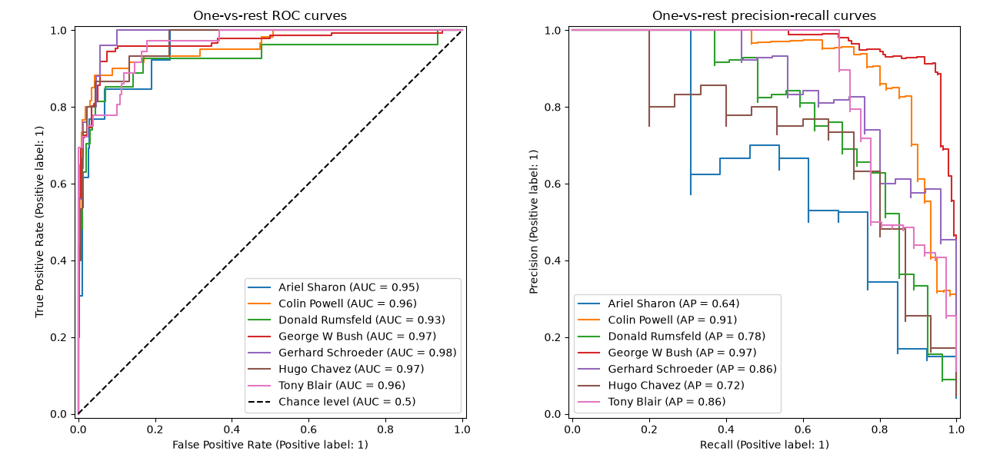
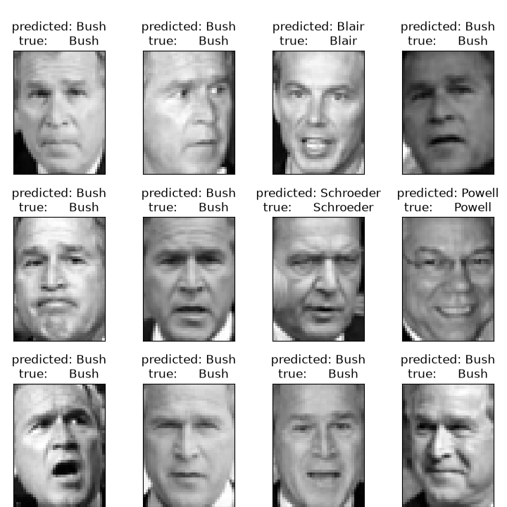
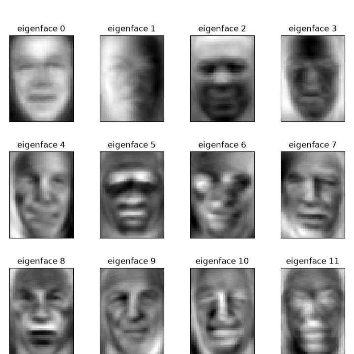
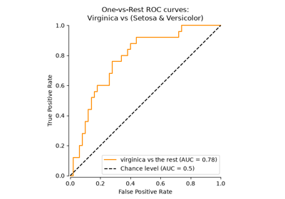
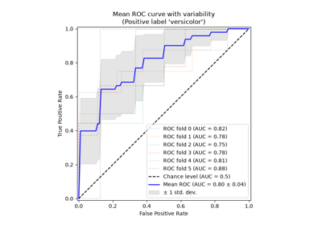

Note
Go to the end to download the full example code or to run this example in your browser via JupyterLite or Binder.
Faces recognition example using eigenfaces and kernel approximation#
This example builds a classical face recognition pipeline on the “Labeled Faces in the Wild” (LFW) dataset, a preprocessed excerpt of which is available here: https://www.kaggle.com/datasets/jessicali9530/lfw-dataset
We reduce the dimensionality of the face images with PCA (the eigenfaces), then
approximate the RBF kernel with Nystroem
and train a LogisticRegression on the resulting
features. The full chain is wrapped in a Pipeline so
that cross-validation does not leak information from the test set. The
hyperparameters are tuned with a successive halving search
(HalvingRandomSearchCV) that minimizes the
log loss. We finally evaluate the model both quantitatively, with a
classification report and one-vs-rest ROC and precision-recall curves, and
qualitatively, by displaying the predictions and the eigenfaces.
# Authors: The scikit-learn developers
# SPDX-License-Identifier: BSD-3-Clause
Loading the dataset#
We download the Labeled Faces in the Wild (LFW) dataset and load it as numpy arrays. Each sample is a flattened grayscale image; the target is the identity of the person pictured.
from sklearn.datasets import fetch_lfw_people
lfw_people = fetch_lfw_people(min_faces_per_person=70, resize=0.4)
# Introspect the image arrays to find the shapes (for plotting).
n_samples, height, width = lfw_people.images.shape
# For machine learning we use the data directly (relative pixel positions are
# ignored by this model).
X = lfw_people.data
n_features = X.shape[1]
# The label to predict is the id of the person.
y = lfw_people.target
target_names = lfw_people.target_names
n_classes = target_names.shape[0]
print("Total dataset size:")
print(f"n_samples: {n_samples}")
print(f"n_features: {n_features}")
print(f"n_classes: {n_classes}")
Total dataset size:
n_samples: 1288
n_features: 1850
n_classes: 7
Splitting the dataset#
We hold out 25% of the data for testing. Preprocessing and model fitting are chained in a pipeline below so that scaling and feature extraction are learned only from the training folds during cross-validation.
from sklearn.model_selection import train_test_split
X_train, X_test, y_train, y_test = train_test_split(
X, y, test_size=0.25, random_state=42
)
Building the model pipeline#
We chain preprocessing and classification in a
Pipeline. PCA extracts eigenfaces as a compact
representation; Nystroem approximates
the RBF feature map so that a linear
LogisticRegression can model non-linear
decision boundaries while scaling better than a kernel SVM. Because logistic
regression outputs calibrated probabilities, we can tune the model by
minimizing the log loss.
from sklearn.decomposition import PCA
from sklearn.kernel_approximation import Nystroem
from sklearn.linear_model import LogisticRegression
from sklearn.pipeline import Pipeline
from sklearn.preprocessing import StandardScaler
n_components = 150
model = Pipeline(
steps=[
("scaler", StandardScaler()),
("pca", PCA(n_components=n_components, svd_solver="randomized", whiten=True)),
("nystroem", Nystroem(random_state=42)),
("logreg", LogisticRegression(max_iter=5_000)),
]
)
model
Pipeline(steps=[('scaler', StandardScaler()),
('pca',
PCA(n_components=150, svd_solver='randomized', whiten=True)),
('nystroem', Nystroem(random_state=42)),
('logreg', LogisticRegression(max_iter=5000))])In a Jupyter environment, please rerun this cell to show the HTML representation or trust the notebook. On GitHub, the HTML representation is unable to render, please try loading this page with nbviewer.org.
Parameters
Parameters
Parameters
Parameters
Parameters
Tuning the pipeline with successive halving#
We tune the gamma and n_components of the Nystroem approximation and
the C regularization of the logistic regression with a successive halving
search (HalvingRandomSearchCV). The search
minimizes the log loss (neg_log_loss) and screens many candidates on small
training subsets before investing compute in the most promising ones. We set
min_resources high enough so that PCA can always extract 150 eigenfaces,
even in the first halving iteration.
from time import time
from scipy.stats import loguniform, randint
from sklearn.experimental import enable_halving_search_cv # noqa: F401
from sklearn.model_selection import HalvingRandomSearchCV
print("Fitting the classifier to the training set")
t0 = time()
param_distributions = {
"nystroem__gamma": loguniform(1e-4, 1e-1),
"nystroem__n_components": randint(50, 200),
"logreg__C": loguniform(1e-2, 1e2),
}
clf = HalvingRandomSearchCV(
model,
param_distributions,
n_candidates=30,
factor=3,
min_resources=300,
scoring="neg_log_loss",
random_state=42,
)
clf = clf.fit(X_train, y_train)
print(f"done in {time() - t0:.3f}s")
Fitting the classifier to the training set
done in 17.065s
print("Best estimator found by successive halving search:")
clf.best_estimator_
Best estimator found by successive halving search:
Pipeline(steps=[('scaler', StandardScaler()),
('pca',
PCA(n_components=150, svd_solver='randomized', whiten=True)),
('nystroem',
Nystroem(gamma=np.float64(0.0011756010900231862),
n_components=173, random_state=42)),
('logreg',
LogisticRegression(C=np.float64(20.651425578959262),
max_iter=5000))])In a Jupyter environment, please rerun this cell to show the HTML representation or trust the notebook. On GitHub, the HTML representation is unable to render, please try loading this page with nbviewer.org.
Parameters
Fitted attributes
Parameters
Fitted attributes
1850 features
| x0 |
| x1 |
| x2 |
| x3 |
| x4 |
| x5 |
| x6 |
| x7 |
| x8 |
| x9 |
| x10 |
| x11 |
| x12 |
| x13 |
| x14 |
| x15 |
| x16 |
| x17 |
| x18 |
| x19 |
| x20 |
| x21 |
| x22 |
| x23 |
| x24 |
| x25 |
| x26 |
| x27 |
| x28 |
| x29 |
| x30 |
| x31 |
| x32 |
| x33 |
| x34 |
| x35 |
| x36 |
| x37 |
| x38 |
| x39 |
| x40 |
| x41 |
| x42 |
| x43 |
| x44 |
| x45 |
| x46 |
| x47 |
| x48 |
| x49 |
| x50 |
| x51 |
| x52 |
| x53 |
| x54 |
| x55 |
| x56 |
| x57 |
| x58 |
| x59 |
| x60 |
| x61 |
| x62 |
| x63 |
| x64 |
| x65 |
| x66 |
| x67 |
| x68 |
| x69 |
| x70 |
| x71 |
| x72 |
| x73 |
| x74 |
| x75 |
| x76 |
| x77 |
| x78 |
| x79 |
| x80 |
| x81 |
| x82 |
| x83 |
| x84 |
| x85 |
| x86 |
| x87 |
| x88 |
| x89 |
| x90 |
| x91 |
| x92 |
| x93 |
| x94 |
| x95 |
| x96 |
| x97 |
| x98 |
| x99 |
| x100 |
| x101 |
| x102 |
| x103 |
| x104 |
| x105 |
| x106 |
| x107 |
| x108 |
| x109 |
| x110 |
| x111 |
| x112 |
| x113 |
| x114 |
| x115 |
| x116 |
| x117 |
| x118 |
| x119 |
| x120 |
| x121 |
| x122 |
| x123 |
| x124 |
| x125 |
| x126 |
| x127 |
| x128 |
| x129 |
| x130 |
| x131 |
| x132 |
| x133 |
| x134 |
| x135 |
| x136 |
| x137 |
| x138 |
| x139 |
| x140 |
| x141 |
| x142 |
| x143 |
| x144 |
| x145 |
| x146 |
| x147 |
| x148 |
| x149 |
| x150 |
| x151 |
| x152 |
| x153 |
| x154 |
| x155 |
| x156 |
| x157 |
| x158 |
| x159 |
| x160 |
| x161 |
| x162 |
| x163 |
| x164 |
| x165 |
| x166 |
| x167 |
| x168 |
| x169 |
| x170 |
| x171 |
| x172 |
| x173 |
| x174 |
| x175 |
| x176 |
| x177 |
| x178 |
| x179 |
| x180 |
| x181 |
| x182 |
| x183 |
| x184 |
| x185 |
| x186 |
| x187 |
| x188 |
| x189 |
| x190 |
| x191 |
| x192 |
| x193 |
| x194 |
| x195 |
| x196 |
| x197 |
| x198 |
| x199 |
| x200 |
| x201 |
| x202 |
| x203 |
| x204 |
| x205 |
| x206 |
| x207 |
| x208 |
| x209 |
| x210 |
| x211 |
| x212 |
| x213 |
| x214 |
| x215 |
| x216 |
| x217 |
| x218 |
| x219 |
| x220 |
| x221 |
| x222 |
| x223 |
| x224 |
| x225 |
| x226 |
| x227 |
| x228 |
| x229 |
| x230 |
| x231 |
| x232 |
| x233 |
| x234 |
| x235 |
| x236 |
| x237 |
| x238 |
| x239 |
| x240 |
| x241 |
| x242 |
| x243 |
| x244 |
| x245 |
| x246 |
| x247 |
| x248 |
| x249 |
| x250 |
| x251 |
| x252 |
| x253 |
| x254 |
| x255 |
| x256 |
| x257 |
| x258 |
| x259 |
| x260 |
| x261 |
| x262 |
| x263 |
| x264 |
| x265 |
| x266 |
| x267 |
| x268 |
| x269 |
| x270 |
| x271 |
| x272 |
| x273 |
| x274 |
| x275 |
| x276 |
| x277 |
| x278 |
| x279 |
| x280 |
| x281 |
| x282 |
| x283 |
| x284 |
| x285 |
| x286 |
| x287 |
| x288 |
| x289 |
| x290 |
| x291 |
| x292 |
| x293 |
| x294 |
| x295 |
| x296 |
| x297 |
| x298 |
| x299 |
| x300 |
| x301 |
| x302 |
| x303 |
| x304 |
| x305 |
| x306 |
| x307 |
| x308 |
| x309 |
| x310 |
| x311 |
| x312 |
| x313 |
| x314 |
| x315 |
| x316 |
| x317 |
| x318 |
| x319 |
| x320 |
| x321 |
| x322 |
| x323 |
| x324 |
| x325 |
| x326 |
| x327 |
| x328 |
| x329 |
| x330 |
| x331 |
| x332 |
| x333 |
| x334 |
| x335 |
| x336 |
| x337 |
| x338 |
| x339 |
| x340 |
| x341 |
| x342 |
| x343 |
| x344 |
| x345 |
| x346 |
| x347 |
| x348 |
| x349 |
| x350 |
| x351 |
| x352 |
| x353 |
| x354 |
| x355 |
| x356 |
| x357 |
| x358 |
| x359 |
| x360 |
| x361 |
| x362 |
| x363 |
| x364 |
| x365 |
| x366 |
| x367 |
| x368 |
| x369 |
| x370 |
| x371 |
| x372 |
| x373 |
| x374 |
| x375 |
| x376 |
| x377 |
| x378 |
| x379 |
| x380 |
| x381 |
| x382 |
| x383 |
| x384 |
| x385 |
| x386 |
| x387 |
| x388 |
| x389 |
| x390 |
| x391 |
| x392 |
| x393 |
| x394 |
| x395 |
| x396 |
| x397 |
| x398 |
| x399 |
| x400 |
| x401 |
| x402 |
| x403 |
| x404 |
| x405 |
| x406 |
| x407 |
| x408 |
| x409 |
| x410 |
| x411 |
| x412 |
| x413 |
| x414 |
| x415 |
| x416 |
| x417 |
| x418 |
| x419 |
| x420 |
| x421 |
| x422 |
| x423 |
| x424 |
| x425 |
| x426 |
| x427 |
| x428 |
| x429 |
| x430 |
| x431 |
| x432 |
| x433 |
| x434 |
| x435 |
| x436 |
| x437 |
| x438 |
| x439 |
| x440 |
| x441 |
| x442 |
| x443 |
| x444 |
| x445 |
| x446 |
| x447 |
| x448 |
| x449 |
| x450 |
| x451 |
| x452 |
| x453 |
| x454 |
| x455 |
| x456 |
| x457 |
| x458 |
| x459 |
| x460 |
| x461 |
| x462 |
| x463 |
| x464 |
| x465 |
| x466 |
| x467 |
| x468 |
| x469 |
| x470 |
| x471 |
| x472 |
| x473 |
| x474 |
| x475 |
| x476 |
| x477 |
| x478 |
| x479 |
| x480 |
| x481 |
| x482 |
| x483 |
| x484 |
| x485 |
| x486 |
| x487 |
| x488 |
| x489 |
| x490 |
| x491 |
| x492 |
| x493 |
| x494 |
| x495 |
| x496 |
| x497 |
| x498 |
| x499 |
| x500 |
| x501 |
| x502 |
| x503 |
| x504 |
| x505 |
| x506 |
| x507 |
| x508 |
| x509 |
| x510 |
| x511 |
| x512 |
| x513 |
| x514 |
| x515 |
| x516 |
| x517 |
| x518 |
| x519 |
| x520 |
| x521 |
| x522 |
| x523 |
| x524 |
| x525 |
| x526 |
| x527 |
| x528 |
| x529 |
| x530 |
| x531 |
| x532 |
| x533 |
| x534 |
| x535 |
| x536 |
| x537 |
| x538 |
| x539 |
| x540 |
| x541 |
| x542 |
| x543 |
| x544 |
| x545 |
| x546 |
| x547 |
| x548 |
| x549 |
| x550 |
| x551 |
| x552 |
| x553 |
| x554 |
| x555 |
| x556 |
| x557 |
| x558 |
| x559 |
| x560 |
| x561 |
| x562 |
| x563 |
| x564 |
| x565 |
| x566 |
| x567 |
| x568 |
| x569 |
| x570 |
| x571 |
| x572 |
| x573 |
| x574 |
| x575 |
| x576 |
| x577 |
| x578 |
| x579 |
| x580 |
| x581 |
| x582 |
| x583 |
| x584 |
| x585 |
| x586 |
| x587 |
| x588 |
| x589 |
| x590 |
| x591 |
| x592 |
| x593 |
| x594 |
| x595 |
| x596 |
| x597 |
| x598 |
| x599 |
| x600 |
| x601 |
| x602 |
| x603 |
| x604 |
| x605 |
| x606 |
| x607 |
| x608 |
| x609 |
| x610 |
| x611 |
| x612 |
| x613 |
| x614 |
| x615 |
| x616 |
| x617 |
| x618 |
| x619 |
| x620 |
| x621 |
| x622 |
| x623 |
| x624 |
| x625 |
| x626 |
| x627 |
| x628 |
| x629 |
| x630 |
| x631 |
| x632 |
| x633 |
| x634 |
| x635 |
| x636 |
| x637 |
| x638 |
| x639 |
| x640 |
| x641 |
| x642 |
| x643 |
| x644 |
| x645 |
| x646 |
| x647 |
| x648 |
| x649 |
| x650 |
| x651 |
| x652 |
| x653 |
| x654 |
| x655 |
| x656 |
| x657 |
| x658 |
| x659 |
| x660 |
| x661 |
| x662 |
| x663 |
| x664 |
| x665 |
| x666 |
| x667 |
| x668 |
| x669 |
| x670 |
| x671 |
| x672 |
| x673 |
| x674 |
| x675 |
| x676 |
| x677 |
| x678 |
| x679 |
| x680 |
| x681 |
| x682 |
| x683 |
| x684 |
| x685 |
| x686 |
| x687 |
| x688 |
| x689 |
| x690 |
| x691 |
| x692 |
| x693 |
| x694 |
| x695 |
| x696 |
| x697 |
| x698 |
| x699 |
| x700 |
| x701 |
| x702 |
| x703 |
| x704 |
| x705 |
| x706 |
| x707 |
| x708 |
| x709 |
| x710 |
| x711 |
| x712 |
| x713 |
| x714 |
| x715 |
| x716 |
| x717 |
| x718 |
| x719 |
| x720 |
| x721 |
| x722 |
| x723 |
| x724 |
| x725 |
| x726 |
| x727 |
| x728 |
| x729 |
| x730 |
| x731 |
| x732 |
| x733 |
| x734 |
| x735 |
| x736 |
| x737 |
| x738 |
| x739 |
| x740 |
| x741 |
| x742 |
| x743 |
| x744 |
| x745 |
| x746 |
| x747 |
| x748 |
| x749 |
| x750 |
| x751 |
| x752 |
| x753 |
| x754 |
| x755 |
| x756 |
| x757 |
| x758 |
| x759 |
| x760 |
| x761 |
| x762 |
| x763 |
| x764 |
| x765 |
| x766 |
| x767 |
| x768 |
| x769 |
| x770 |
| x771 |
| x772 |
| x773 |
| x774 |
| x775 |
| x776 |
| x777 |
| x778 |
| x779 |
| x780 |
| x781 |
| x782 |
| x783 |
| x784 |
| x785 |
| x786 |
| x787 |
| x788 |
| x789 |
| x790 |
| x791 |
| x792 |
| x793 |
| x794 |
| x795 |
| x796 |
| x797 |
| x798 |
| x799 |
| x800 |
| x801 |
| x802 |
| x803 |
| x804 |
| x805 |
| x806 |
| x807 |
| x808 |
| x809 |
| x810 |
| x811 |
| x812 |
| x813 |
| x814 |
| x815 |
| x816 |
| x817 |
| x818 |
| x819 |
| x820 |
| x821 |
| x822 |
| x823 |
| x824 |
| x825 |
| x826 |
| x827 |
| x828 |
| x829 |
| x830 |
| x831 |
| x832 |
| x833 |
| x834 |
| x835 |
| x836 |
| x837 |
| x838 |
| x839 |
| x840 |
| x841 |
| x842 |
| x843 |
| x844 |
| x845 |
| x846 |
| x847 |
| x848 |
| x849 |
| x850 |
| x851 |
| x852 |
| x853 |
| x854 |
| x855 |
| x856 |
| x857 |
| x858 |
| x859 |
| x860 |
| x861 |
| x862 |
| x863 |
| x864 |
| x865 |
| x866 |
| x867 |
| x868 |
| x869 |
| x870 |
| x871 |
| x872 |
| x873 |
| x874 |
| x875 |
| x876 |
| x877 |
| x878 |
| x879 |
| x880 |
| x881 |
| x882 |
| x883 |
| x884 |
| x885 |
| x886 |
| x887 |
| x888 |
| x889 |
| x890 |
| x891 |
| x892 |
| x893 |
| x894 |
| x895 |
| x896 |
| x897 |
| x898 |
| x899 |
| x900 |
| x901 |
| x902 |
| x903 |
| x904 |
| x905 |
| x906 |
| x907 |
| x908 |
| x909 |
| x910 |
| x911 |
| x912 |
| x913 |
| x914 |
| x915 |
| x916 |
| x917 |
| x918 |
| x919 |
| x920 |
| x921 |
| x922 |
| x923 |
| x924 |
| x925 |
| x926 |
| x927 |
| x928 |
| x929 |
| x930 |
| x931 |
| x932 |
| x933 |
| x934 |
| x935 |
| x936 |
| x937 |
| x938 |
| x939 |
| x940 |
| x941 |
| x942 |
| x943 |
| x944 |
| x945 |
| x946 |
| x947 |
| x948 |
| x949 |
| x950 |
| x951 |
| x952 |
| x953 |
| x954 |
| x955 |
| x956 |
| x957 |
| x958 |
| x959 |
| x960 |
| x961 |
| x962 |
| x963 |
| x964 |
| x965 |
| x966 |
| x967 |
| x968 |
| x969 |
| x970 |
| x971 |
| x972 |
| x973 |
| x974 |
| x975 |
| x976 |
| x977 |
| x978 |
| x979 |
| x980 |
| x981 |
| x982 |
| x983 |
| x984 |
| x985 |
| x986 |
| x987 |
| x988 |
| x989 |
| x990 |
| x991 |
| x992 |
| x993 |
| x994 |
| x995 |
| x996 |
| x997 |
| x998 |
| x999 |
| x1000 |
| x1001 |
| x1002 |
| x1003 |
| x1004 |
| x1005 |
| x1006 |
| x1007 |
| x1008 |
| x1009 |
| x1010 |
| x1011 |
| x1012 |
| x1013 |
| x1014 |
| x1015 |
| x1016 |
| x1017 |
| x1018 |
| x1019 |
| x1020 |
| x1021 |
| x1022 |
| x1023 |
| x1024 |
| x1025 |
| x1026 |
| x1027 |
| x1028 |
| x1029 |
| x1030 |
| x1031 |
| x1032 |
| x1033 |
| x1034 |
| x1035 |
| x1036 |
| x1037 |
| x1038 |
| x1039 |
| x1040 |
| x1041 |
| x1042 |
| x1043 |
| x1044 |
| x1045 |
| x1046 |
| x1047 |
| x1048 |
| x1049 |
| x1050 |
| x1051 |
| x1052 |
| x1053 |
| x1054 |
| x1055 |
| x1056 |
| x1057 |
| x1058 |
| x1059 |
| x1060 |
| x1061 |
| x1062 |
| x1063 |
| x1064 |
| x1065 |
| x1066 |
| x1067 |
| x1068 |
| x1069 |
| x1070 |
| x1071 |
| x1072 |
| x1073 |
| x1074 |
| x1075 |
| x1076 |
| x1077 |
| x1078 |
| x1079 |
| x1080 |
| x1081 |
| x1082 |
| x1083 |
| x1084 |
| x1085 |
| x1086 |
| x1087 |
| x1088 |
| x1089 |
| x1090 |
| x1091 |
| x1092 |
| x1093 |
| x1094 |
| x1095 |
| x1096 |
| x1097 |
| x1098 |
| x1099 |
| x1100 |
| x1101 |
| x1102 |
| x1103 |
| x1104 |
| x1105 |
| x1106 |
| x1107 |
| x1108 |
| x1109 |
| x1110 |
| x1111 |
| x1112 |
| x1113 |
| x1114 |
| x1115 |
| x1116 |
| x1117 |
| x1118 |
| x1119 |
| x1120 |
| x1121 |
| x1122 |
| x1123 |
| x1124 |
| x1125 |
| x1126 |
| x1127 |
| x1128 |
| x1129 |
| x1130 |
| x1131 |
| x1132 |
| x1133 |
| x1134 |
| x1135 |
| x1136 |
| x1137 |
| x1138 |
| x1139 |
| x1140 |
| x1141 |
| x1142 |
| x1143 |
| x1144 |
| x1145 |
| x1146 |
| x1147 |
| x1148 |
| x1149 |
| x1150 |
| x1151 |
| x1152 |
| x1153 |
| x1154 |
| x1155 |
| x1156 |
| x1157 |
| x1158 |
| x1159 |
| x1160 |
| x1161 |
| x1162 |
| x1163 |
| x1164 |
| x1165 |
| x1166 |
| x1167 |
| x1168 |
| x1169 |
| x1170 |
| x1171 |
| x1172 |
| x1173 |
| x1174 |
| x1175 |
| x1176 |
| x1177 |
| x1178 |
| x1179 |
| x1180 |
| x1181 |
| x1182 |
| x1183 |
| x1184 |
| x1185 |
| x1186 |
| x1187 |
| x1188 |
| x1189 |
| x1190 |
| x1191 |
| x1192 |
| x1193 |
| x1194 |
| x1195 |
| x1196 |
| x1197 |
| x1198 |
| x1199 |
| x1200 |
| x1201 |
| x1202 |
| x1203 |
| x1204 |
| x1205 |
| x1206 |
| x1207 |
| x1208 |
| x1209 |
| x1210 |
| x1211 |
| x1212 |
| x1213 |
| x1214 |
| x1215 |
| x1216 |
| x1217 |
| x1218 |
| x1219 |
| x1220 |
| x1221 |
| x1222 |
| x1223 |
| x1224 |
| x1225 |
| x1226 |
| x1227 |
| x1228 |
| x1229 |
| x1230 |
| x1231 |
| x1232 |
| x1233 |
| x1234 |
| x1235 |
| x1236 |
| x1237 |
| x1238 |
| x1239 |
| x1240 |
| x1241 |
| x1242 |
| x1243 |
| x1244 |
| x1245 |
| x1246 |
| x1247 |
| x1248 |
| x1249 |
| x1250 |
| x1251 |
| x1252 |
| x1253 |
| x1254 |
| x1255 |
| x1256 |
| x1257 |
| x1258 |
| x1259 |
| x1260 |
| x1261 |
| x1262 |
| x1263 |
| x1264 |
| x1265 |
| x1266 |
| x1267 |
| x1268 |
| x1269 |
| x1270 |
| x1271 |
| x1272 |
| x1273 |
| x1274 |
| x1275 |
| x1276 |
| x1277 |
| x1278 |
| x1279 |
| x1280 |
| x1281 |
| x1282 |
| x1283 |
| x1284 |
| x1285 |
| x1286 |
| x1287 |
| x1288 |
| x1289 |
| x1290 |
| x1291 |
| x1292 |
| x1293 |
| x1294 |
| x1295 |
| x1296 |
| x1297 |
| x1298 |
| x1299 |
| x1300 |
| x1301 |
| x1302 |
| x1303 |
| x1304 |
| x1305 |
| x1306 |
| x1307 |
| x1308 |
| x1309 |
| x1310 |
| x1311 |
| x1312 |
| x1313 |
| x1314 |
| x1315 |
| x1316 |
| x1317 |
| x1318 |
| x1319 |
| x1320 |
| x1321 |
| x1322 |
| x1323 |
| x1324 |
| x1325 |
| x1326 |
| x1327 |
| x1328 |
| x1329 |
| x1330 |
| x1331 |
| x1332 |
| x1333 |
| x1334 |
| x1335 |
| x1336 |
| x1337 |
| x1338 |
| x1339 |
| x1340 |
| x1341 |
| x1342 |
| x1343 |
| x1344 |
| x1345 |
| x1346 |
| x1347 |
| x1348 |
| x1349 |
| x1350 |
| x1351 |
| x1352 |
| x1353 |
| x1354 |
| x1355 |
| x1356 |
| x1357 |
| x1358 |
| x1359 |
| x1360 |
| x1361 |
| x1362 |
| x1363 |
| x1364 |
| x1365 |
| x1366 |
| x1367 |
| x1368 |
| x1369 |
| x1370 |
| x1371 |
| x1372 |
| x1373 |
| x1374 |
| x1375 |
| x1376 |
| x1377 |
| x1378 |
| x1379 |
| x1380 |
| x1381 |
| x1382 |
| x1383 |
| x1384 |
| x1385 |
| x1386 |
| x1387 |
| x1388 |
| x1389 |
| x1390 |
| x1391 |
| x1392 |
| x1393 |
| x1394 |
| x1395 |
| x1396 |
| x1397 |
| x1398 |
| x1399 |
| x1400 |
| x1401 |
| x1402 |
| x1403 |
| x1404 |
| x1405 |
| x1406 |
| x1407 |
| x1408 |
| x1409 |
| x1410 |
| x1411 |
| x1412 |
| x1413 |
| x1414 |
| x1415 |
| x1416 |
| x1417 |
| x1418 |
| x1419 |
| x1420 |
| x1421 |
| x1422 |
| x1423 |
| x1424 |
| x1425 |
| x1426 |
| x1427 |
| x1428 |
| x1429 |
| x1430 |
| x1431 |
| x1432 |
| x1433 |
| x1434 |
| x1435 |
| x1436 |
| x1437 |
| x1438 |
| x1439 |
| x1440 |
| x1441 |
| x1442 |
| x1443 |
| x1444 |
| x1445 |
| x1446 |
| x1447 |
| x1448 |
| x1449 |
| x1450 |
| x1451 |
| x1452 |
| x1453 |
| x1454 |
| x1455 |
| x1456 |
| x1457 |
| x1458 |
| x1459 |
| x1460 |
| x1461 |
| x1462 |
| x1463 |
| x1464 |
| x1465 |
| x1466 |
| x1467 |
| x1468 |
| x1469 |
| x1470 |
| x1471 |
| x1472 |
| x1473 |
| x1474 |
| x1475 |
| x1476 |
| x1477 |
| x1478 |
| x1479 |
| x1480 |
| x1481 |
| x1482 |
| x1483 |
| x1484 |
| x1485 |
| x1486 |
| x1487 |
| x1488 |
| x1489 |
| x1490 |
| x1491 |
| x1492 |
| x1493 |
| x1494 |
| x1495 |
| x1496 |
| x1497 |
| x1498 |
| x1499 |
| x1500 |
| x1501 |
| x1502 |
| x1503 |
| x1504 |
| x1505 |
| x1506 |
| x1507 |
| x1508 |
| x1509 |
| x1510 |
| x1511 |
| x1512 |
| x1513 |
| x1514 |
| x1515 |
| x1516 |
| x1517 |
| x1518 |
| x1519 |
| x1520 |
| x1521 |
| x1522 |
| x1523 |
| x1524 |
| x1525 |
| x1526 |
| x1527 |
| x1528 |
| x1529 |
| x1530 |
| x1531 |
| x1532 |
| x1533 |
| x1534 |
| x1535 |
| x1536 |
| x1537 |
| x1538 |
| x1539 |
| x1540 |
| x1541 |
| x1542 |
| x1543 |
| x1544 |
| x1545 |
| x1546 |
| x1547 |
| x1548 |
| x1549 |
| x1550 |
| x1551 |
| x1552 |
| x1553 |
| x1554 |
| x1555 |
| x1556 |
| x1557 |
| x1558 |
| x1559 |
| x1560 |
| x1561 |
| x1562 |
| x1563 |
| x1564 |
| x1565 |
| x1566 |
| x1567 |
| x1568 |
| x1569 |
| x1570 |
| x1571 |
| x1572 |
| x1573 |
| x1574 |
| x1575 |
| x1576 |
| x1577 |
| x1578 |
| x1579 |
| x1580 |
| x1581 |
| x1582 |
| x1583 |
| x1584 |
| x1585 |
| x1586 |
| x1587 |
| x1588 |
| x1589 |
| x1590 |
| x1591 |
| x1592 |
| x1593 |
| x1594 |
| x1595 |
| x1596 |
| x1597 |
| x1598 |
| x1599 |
| x1600 |
| x1601 |
| x1602 |
| x1603 |
| x1604 |
| x1605 |
| x1606 |
| x1607 |
| x1608 |
| x1609 |
| x1610 |
| x1611 |
| x1612 |
| x1613 |
| x1614 |
| x1615 |
| x1616 |
| x1617 |
| x1618 |
| x1619 |
| x1620 |
| x1621 |
| x1622 |
| x1623 |
| x1624 |
| x1625 |
| x1626 |
| x1627 |
| x1628 |
| x1629 |
| x1630 |
| x1631 |
| x1632 |
| x1633 |
| x1634 |
| x1635 |
| x1636 |
| x1637 |
| x1638 |
| x1639 |
| x1640 |
| x1641 |
| x1642 |
| x1643 |
| x1644 |
| x1645 |
| x1646 |
| x1647 |
| x1648 |
| x1649 |
| x1650 |
| x1651 |
| x1652 |
| x1653 |
| x1654 |
| x1655 |
| x1656 |
| x1657 |
| x1658 |
| x1659 |
| x1660 |
| x1661 |
| x1662 |
| x1663 |
| x1664 |
| x1665 |
| x1666 |
| x1667 |
| x1668 |
| x1669 |
| x1670 |
| x1671 |
| x1672 |
| x1673 |
| x1674 |
| x1675 |
| x1676 |
| x1677 |
| x1678 |
| x1679 |
| x1680 |
| x1681 |
| x1682 |
| x1683 |
| x1684 |
| x1685 |
| x1686 |
| x1687 |
| x1688 |
| x1689 |
| x1690 |
| x1691 |
| x1692 |
| x1693 |
| x1694 |
| x1695 |
| x1696 |
| x1697 |
| x1698 |
| x1699 |
| x1700 |
| x1701 |
| x1702 |
| x1703 |
| x1704 |
| x1705 |
| x1706 |
| x1707 |
| x1708 |
| x1709 |
| x1710 |
| x1711 |
| x1712 |
| x1713 |
| x1714 |
| x1715 |
| x1716 |
| x1717 |
| x1718 |
| x1719 |
| x1720 |
| x1721 |
| x1722 |
| x1723 |
| x1724 |
| x1725 |
| x1726 |
| x1727 |
| x1728 |
| x1729 |
| x1730 |
| x1731 |
| x1732 |
| x1733 |
| x1734 |
| x1735 |
| x1736 |
| x1737 |
| x1738 |
| x1739 |
| x1740 |
| x1741 |
| x1742 |
| x1743 |
| x1744 |
| x1745 |
| x1746 |
| x1747 |
| x1748 |
| x1749 |
| x1750 |
| x1751 |
| x1752 |
| x1753 |
| x1754 |
| x1755 |
| x1756 |
| x1757 |
| x1758 |
| x1759 |
| x1760 |
| x1761 |
| x1762 |
| x1763 |
| x1764 |
| x1765 |
| x1766 |
| x1767 |
| x1768 |
| x1769 |
| x1770 |
| x1771 |
| x1772 |
| x1773 |
| x1774 |
| x1775 |
| x1776 |
| x1777 |
| x1778 |
| x1779 |
| x1780 |
| x1781 |
| x1782 |
| x1783 |
| x1784 |
| x1785 |
| x1786 |
| x1787 |
| x1788 |
| x1789 |
| x1790 |
| x1791 |
| x1792 |
| x1793 |
| x1794 |
| x1795 |
| x1796 |
| x1797 |
| x1798 |
| x1799 |
| x1800 |
| x1801 |
| x1802 |
| x1803 |
| x1804 |
| x1805 |
| x1806 |
| x1807 |
| x1808 |
| x1809 |
| x1810 |
| x1811 |
| x1812 |
| x1813 |
| x1814 |
| x1815 |
| x1816 |
| x1817 |
| x1818 |
| x1819 |
| x1820 |
| x1821 |
| x1822 |
| x1823 |
| x1824 |
| x1825 |
| x1826 |
| x1827 |
| x1828 |
| x1829 |
| x1830 |
| x1831 |
| x1832 |
| x1833 |
| x1834 |
| x1835 |
| x1836 |
| x1837 |
| x1838 |
| x1839 |
| x1840 |
| x1841 |
| x1842 |
| x1843 |
| x1844 |
| x1845 |
| x1846 |
| x1847 |
| x1848 |
| x1849 |
Parameters
Fitted attributes
150 features
| pca0 |
| pca1 |
| pca2 |
| pca3 |
| pca4 |
| pca5 |
| pca6 |
| pca7 |
| pca8 |
| pca9 |
| pca10 |
| pca11 |
| pca12 |
| pca13 |
| pca14 |
| pca15 |
| pca16 |
| pca17 |
| pca18 |
| pca19 |
| pca20 |
| pca21 |
| pca22 |
| pca23 |
| pca24 |
| pca25 |
| pca26 |
| pca27 |
| pca28 |
| pca29 |
| pca30 |
| pca31 |
| pca32 |
| pca33 |
| pca34 |
| pca35 |
| pca36 |
| pca37 |
| pca38 |
| pca39 |
| pca40 |
| pca41 |
| pca42 |
| pca43 |
| pca44 |
| pca45 |
| pca46 |
| pca47 |
| pca48 |
| pca49 |
| pca50 |
| pca51 |
| pca52 |
| pca53 |
| pca54 |
| pca55 |
| pca56 |
| pca57 |
| pca58 |
| pca59 |
| pca60 |
| pca61 |
| pca62 |
| pca63 |
| pca64 |
| pca65 |
| pca66 |
| pca67 |
| pca68 |
| pca69 |
| pca70 |
| pca71 |
| pca72 |
| pca73 |
| pca74 |
| pca75 |
| pca76 |
| pca77 |
| pca78 |
| pca79 |
| pca80 |
| pca81 |
| pca82 |
| pca83 |
| pca84 |
| pca85 |
| pca86 |
| pca87 |
| pca88 |
| pca89 |
| pca90 |
| pca91 |
| pca92 |
| pca93 |
| pca94 |
| pca95 |
| pca96 |
| pca97 |
| pca98 |
| pca99 |
| pca100 |
| pca101 |
| pca102 |
| pca103 |
| pca104 |
| pca105 |
| pca106 |
| pca107 |
| pca108 |
| pca109 |
| pca110 |
| pca111 |
| pca112 |
| pca113 |
| pca114 |
| pca115 |
| pca116 |
| pca117 |
| pca118 |
| pca119 |
| pca120 |
| pca121 |
| pca122 |
| pca123 |
| pca124 |
| pca125 |
| pca126 |
| pca127 |
| pca128 |
| pca129 |
| pca130 |
| pca131 |
| pca132 |
| pca133 |
| pca134 |
| pca135 |
| pca136 |
| pca137 |
| pca138 |
| pca139 |
| pca140 |
| pca141 |
| pca142 |
| pca143 |
| pca144 |
| pca145 |
| pca146 |
| pca147 |
| pca148 |
| pca149 |
Parameters
Fitted attributes
| Name | Type | Value |
|---|---|---|
|
component_indices_
component_indices_: ndarray of shape (n_components) Indices of ``components_`` in the training set. |
ndarray[int64](173,) | [244,467,836,..., 65,141,266] |
|
components_
components_: ndarray of shape (n_components, n_features) Subset of training points used to construct the feature map. |
ndarray[float32](173, 150) | [[ 1.45,-0.18, 0.09,..., 1.9 , 0.87, 0.31], [-0.18,-0.9 , 2.32,..., 0.04,-0.16, 0.08], [ 1.18,-1.99,-0.16,..., 0.71, 1.93,-0.59], ..., [ 1.01, 0.23,-0.32,...,-0.79, 0.48, 0.3 ], [ 2.09, 0.53,-0.95,..., 0.99, 0.14, 0.23], [ 0.28,-0.53, 1.28,..., 1.36,-0.46, 1.92]] |
|
n_features_in_
n_features_in_: int Number of features seen during :term:`fit`. .. versionadded:: 0.24 |
int | 150 |
|
normalization_
normalization_: ndarray of shape (n_components, n_components) Normalization matrix needed for embedding. Square root of the kernel matrix on ``components_``. |
ndarray[float32](173, 173) | [[ 2.91, 0.02,-0.11,..., 0.05,-0.15, 0.07], [ 0.02, 1.55, 0.02,...,-0.02,-0.01, 0.1 ], [-0.11, 0.02, 2.4 ,..., 0.16,-0.09,-0.02], ..., [ 0.05,-0.02, 0.16,..., 3.14, 0.04,-0.05], [-0.15,-0.01,-0.09,..., 0.04, 3.66,-0.13], [ 0.07, 0.1 ,-0.02,...,-0.05,-0.13, 2.41]] |
173 features
| nystroem0 |
| nystroem1 |
| nystroem2 |
| nystroem3 |
| nystroem4 |
| nystroem5 |
| nystroem6 |
| nystroem7 |
| nystroem8 |
| nystroem9 |
| nystroem10 |
| nystroem11 |
| nystroem12 |
| nystroem13 |
| nystroem14 |
| nystroem15 |
| nystroem16 |
| nystroem17 |
| nystroem18 |
| nystroem19 |
| nystroem20 |
| nystroem21 |
| nystroem22 |
| nystroem23 |
| nystroem24 |
| nystroem25 |
| nystroem26 |
| nystroem27 |
| nystroem28 |
| nystroem29 |
| nystroem30 |
| nystroem31 |
| nystroem32 |
| nystroem33 |
| nystroem34 |
| nystroem35 |
| nystroem36 |
| nystroem37 |
| nystroem38 |
| nystroem39 |
| nystroem40 |
| nystroem41 |
| nystroem42 |
| nystroem43 |
| nystroem44 |
| nystroem45 |
| nystroem46 |
| nystroem47 |
| nystroem48 |
| nystroem49 |
| nystroem50 |
| nystroem51 |
| nystroem52 |
| nystroem53 |
| nystroem54 |
| nystroem55 |
| nystroem56 |
| nystroem57 |
| nystroem58 |
| nystroem59 |
| nystroem60 |
| nystroem61 |
| nystroem62 |
| nystroem63 |
| nystroem64 |
| nystroem65 |
| nystroem66 |
| nystroem67 |
| nystroem68 |
| nystroem69 |
| nystroem70 |
| nystroem71 |
| nystroem72 |
| nystroem73 |
| nystroem74 |
| nystroem75 |
| nystroem76 |
| nystroem77 |
| nystroem78 |
| nystroem79 |
| nystroem80 |
| nystroem81 |
| nystroem82 |
| nystroem83 |
| nystroem84 |
| nystroem85 |
| nystroem86 |
| nystroem87 |
| nystroem88 |
| nystroem89 |
| nystroem90 |
| nystroem91 |
| nystroem92 |
| nystroem93 |
| nystroem94 |
| nystroem95 |
| nystroem96 |
| nystroem97 |
| nystroem98 |
| nystroem99 |
| nystroem100 |
| nystroem101 |
| nystroem102 |
| nystroem103 |
| nystroem104 |
| nystroem105 |
| nystroem106 |
| nystroem107 |
| nystroem108 |
| nystroem109 |
| nystroem110 |
| nystroem111 |
| nystroem112 |
| nystroem113 |
| nystroem114 |
| nystroem115 |
| nystroem116 |
| nystroem117 |
| nystroem118 |
| nystroem119 |
| nystroem120 |
| nystroem121 |
| nystroem122 |
| nystroem123 |
| nystroem124 |
| nystroem125 |
| nystroem126 |
| nystroem127 |
| nystroem128 |
| nystroem129 |
| nystroem130 |
| nystroem131 |
| nystroem132 |
| nystroem133 |
| nystroem134 |
| nystroem135 |
| nystroem136 |
| nystroem137 |
| nystroem138 |
| nystroem139 |
| nystroem140 |
| nystroem141 |
| nystroem142 |
| nystroem143 |
| nystroem144 |
| nystroem145 |
| nystroem146 |
| nystroem147 |
| nystroem148 |
| nystroem149 |
| nystroem150 |
| nystroem151 |
| nystroem152 |
| nystroem153 |
| nystroem154 |
| nystroem155 |
| nystroem156 |
| nystroem157 |
| nystroem158 |
| nystroem159 |
| nystroem160 |
| nystroem161 |
| nystroem162 |
| nystroem163 |
| nystroem164 |
| nystroem165 |
| nystroem166 |
| nystroem167 |
| nystroem168 |
| nystroem169 |
| nystroem170 |
| nystroem171 |
| nystroem172 |
Parameters
Fitted attributes
Quantitative evaluation#
We measure the model quality on the held-out test set with a classification report and, since the probabilities are well calibrated, one-vs-rest ROC and precision-recall curves. The pipeline handles preprocessing internally.
import matplotlib.pyplot as plt
from sklearn.metrics import classification_report
from sklearn.preprocessing import label_binarize
print("Predicting people's names on the test set")
t0 = time()
y_pred = clf.predict(X_test)
y_score = clf.predict_proba(X_test)
print(f"done in {time() - t0:.3f}s")
print(classification_report(y_test, y_pred, target_names=target_names))
Predicting people's names on the test set
done in 0.010s
precision recall f1-score support
Ariel Sharon 0.64 0.54 0.58 13
Colin Powell 0.79 0.87 0.83 60
Donald Rumsfeld 0.77 0.63 0.69 27
George W Bush 0.87 0.95 0.91 146
Gerhard Schroeder 0.68 0.68 0.68 25
Hugo Chavez 0.80 0.53 0.64 15
Tony Blair 0.90 0.72 0.80 36
accuracy 0.83 322
macro avg 0.78 0.70 0.73 322
weighted avg 0.82 0.83 0.82 322
Because the problem is multiclass, we summarize the ranking quality of the predicted probabilities with one-vs-rest curves: each identity is in turn treated as the positive class against all the others. The ROC curve relates the true positive rate to the false positive rate, while the precision-recall curve is more informative when the positive class is rare, as is the case here where each identity is a small fraction of the test set.
from sklearn.metrics import PrecisionRecallDisplay, RocCurveDisplay
classes = list(range(n_classes))
y_onehot_test = label_binarize(y_test, classes=classes)
fig, (ax_roc, ax_pr) = plt.subplots(1, 2, figsize=(13, 6))
for class_id, name in enumerate(target_names):
RocCurveDisplay.from_predictions(
y_onehot_test[:, class_id],
y_score[:, class_id],
name=name,
ax=ax_roc,
plot_chance_level=(class_id == n_classes - 1),
)
PrecisionRecallDisplay.from_predictions(
y_onehot_test[:, class_id],
y_score[:, class_id],
name=name,
ax=ax_pr,
)
ax_roc.set_title("One-vs-rest ROC curves")
ax_pr.set_title("One-vs-rest precision-recall curves")
plt.tight_layout()
plt.show()

Qualitative evaluation#
We visualize a gallery of test portraits with their predicted and true labels to inspect the model’s mistakes at a glance.
def plot_gallery(images, titles, height, width, n_row=3, n_col=4):
"""Plot a gallery of portraits."""
fig, axs = plt.subplots(n_row, n_col, figsize=(1.8 * n_col, 2.4 * n_row))
fig.subplots_adjust(bottom=0, left=0.01, right=0.99, top=0.90, hspace=0.35)
for ax, image, title in zip(axs.ravel(), images, titles):
ax.imshow(image.reshape((height, width)), cmap=plt.cm.gray)
ax.set_title(title, size=12)
ax.set_xticks(())
ax.set_yticks(())
return fig
def make_title(y_pred, y_test, target_names, i):
pred_name = target_names[y_pred[i]].rsplit(" ", 1)[-1]
true_name = target_names[y_test[i]].rsplit(" ", 1)[-1]
return f"predicted: {pred_name}\ntrue: {true_name}"
prediction_titles = [
make_title(y_pred, y_test, target_names, i) for i in range(y_pred.shape[0])
]
plot_gallery(X_test, prediction_titles, height, width)

<Figure size 720x720 with 12 Axes>
Eigenfaces gallery#
We display the most significant eigenfaces, i.e. the principal components that form the basis of the face representation learned by the fitted pipeline.
pca = clf.best_estimator_.named_steps["pca"]
eigenfaces = pca.components_.reshape((pca.n_components_, height, width))
eigenface_titles = [f"eigenface {i}" for i in range(eigenfaces.shape[0])]
plot_gallery(eigenfaces, eigenface_titles, height, width)
plt.show()

Conclusion#
This example walks through a classical face recognition pipeline in scikit-learn:
Eigenfaces (PCA) reduce the high-dimensional pixel space to a compact set of uncorrelated features that capture the main variations across faces.
Nystroem + LogisticRegression approximate a non-linear RBF kernel with a linear model that scales better than a kernel SVM and is tuned to minimize the log loss.
Pipeline chains preprocessing and classification so that cross-validation does not leak information from the test set.
Quantitative and qualitative evaluation on a held-out test set confirm whether the pipeline generalizes. The one-vs-rest ROC and precision-recall curves show how well the predicted probabilities rank each identity against the others, independently of any single decision threshold.
In practice, face recognition is often better addressed with convolutional neural networks, but this family of models is outside the scope of the scikit-learn library. Interested readers should instead try PyTorch or TensorFlow to implement such models.
Total running time of the script: (0 minutes 17.931 seconds)
Related examples


Multiclass Receiver Operating Characteristic (ROC)

Receiver Operating Characteristic (ROC) with cross validation

Analysis of the convergence of penalized logistic regression models